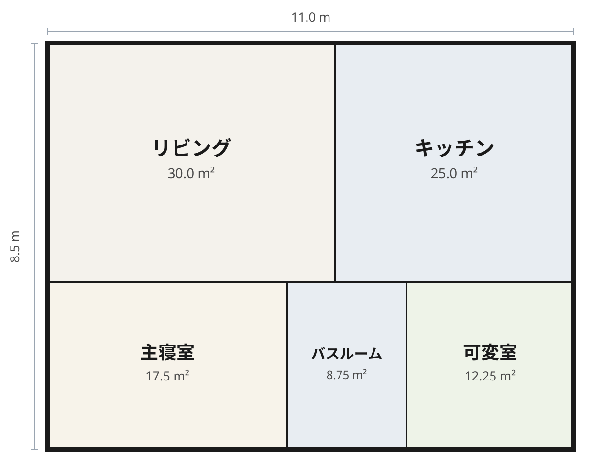

1
ワンフロア完結
寝る・起きる・洗う・洗濯する・干す・しまうを同一フロアに置きます。室内の段差はゼロを標準にし、ドアは引き戸を標準にします。
お客様は、子育てを終えた55〜65歳の夫婦です。築30年を超えた2階建てに住み、使わない2階の部屋と、階段と、冬の朝の寒さを持て余している方へ。
私たちが届けるのは平屋という建物ではありません。暮らしの場面の変化です。
1
寝る・起きる・洗う・洗濯する・干す・しまうを同一フロアに置きます。室内の段差はゼロを標準にし、ドアは引き戸を標準にします。
2
断熱は等級6相当（UA値0.46以下を設計目標）とし、冬の朝の室間温度差3℃以内を物差しにします。吹き抜けは作りません。
3
主寝室以外の部屋は「子ども部屋」「客間」と名付けません。入口は有効900mm以上、介助スペースの下地を最初から入れます。
2階建ては建てません。「終の住まい」「バリアフリー」という言葉は使いません。お客様の言葉で語ります。
平屋 11.0×8.5m、5室。モデルハウスで体験していただきたいのは広さではなく、階段のない朝です。


| 規模 | 平屋 11.0 × 8.5 m（延床 93.5 m²）、5室、家具19点 |
|---|---|
| 各室 | リビング 30.0 m²／キッチン 25.0 m²／主寝室 17.5 m²／バスルーム 8.75 m²／可変室 12.25 m² |
| 屋根・開口 | 切妻屋根 35°、軒の出 0.4 m、窓9箇所、ドア5箇所 |
| 壁 | 壁16面、厚さ 100 mm、高さ 2,450 mm、棟高 約5.7 m |
このモデルは Pascal Editor で構築し、書き出したGLBを FreeCAD 1.1.4 に取り込んで寸法を検証しました（壁厚100mm・高さ2,450mmが実測で一致）。ただしFreeCAD側では面の集まりとして取り込まれるため、実設計では参照モデルとして置き、性能計算と実施設計で作り直します。
正直にお伝えすると、洗面台と洗濯機置場はこの試作では未配置で、「洗う→干す→しまう」動線はまだ実証できていません。断熱性能もモデルでは検証できません。どちらも次の工程の課題として、隠さず書いておきます。
| 会社名 | 株式会社マヒル建築（MAHIRU KENCHIKU） |
|---|---|
| ロゴ | 「継ぎ手の段」— 2本の材を段継ぎで組み合わせた継ぎ目。この会社で段があるのは、継ぎ手だけです |
| 拠点 | 神奈川県藤沢市（小さな設計室＋モデルハウス1棟） |
| 事業 | 平屋の注文住宅のみ。新築のみ |
| 施工エリア | 藤沢・鎌倉・茅ヶ崎・平塚・横浜南部（車で60分圏） |
| 規模 | 年8棟まで。70〜95 m²の平屋 |